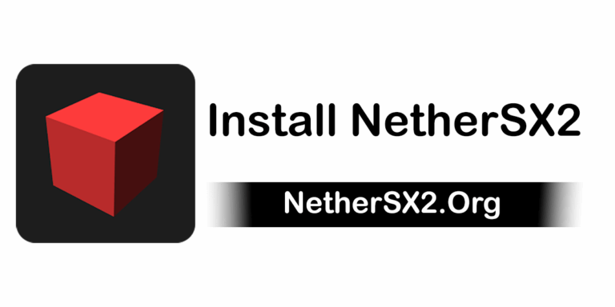
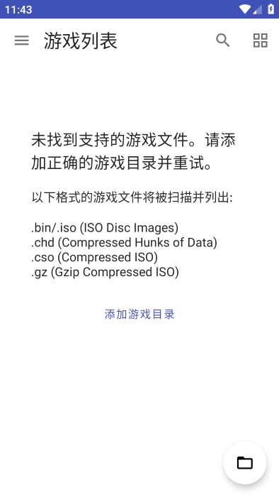
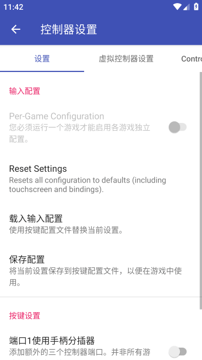

手机上玩 PS2 游戏的极简入门——NetherSX2 五步搞定从安装到跑通
从来没接触过模拟器的小白也能跟着走的 NetherSX2 入门指南，从下载安装、BIOS 配置到第一次把 GT4 跑起来，全程不碰任何专业术语。
这篇能带你从完全不懂到用起来——不需要任何模拟器或 PS2 的前置知识，跟着点就行。
它到底是干嘛的？一个生活化类比讲明白
你可以把 NetherSX2 想象成一台「PS2 游戏机套壳」，套在你的安卓手机上。PS2 光盘里的游戏文件（叫做 ROM 或 ISO）本来只能在索尼那台老机器上跑，NetherSX2 帮你把它们翻译成手机能读懂的指令。
和你手机上玩的现代手游不一样，这些是 2000 年代初的经典作品——GT 赛车 4、旺达与巨像、战神系列、GTA 圣安地列斯……都是当年让无数人在电视机前熬通宵的神作。现在掏出来重玩，画质靠倍线能拉到原生的两到三倍，手感反而更接近坐在家里的那种踏实感。
五分钟上手——从下载安装到第一次跑通
别担心，整个过程就是五个步骤，每一步都不会让你卡壳。
第一步：拿安装包
NetherSX2 不在 Google Play 上架，你需要从它的官网或下载拿到 APK 文件。选标准版就行，文件名一般带 -4248.apk 字样，别碰那些来路不明的"汉化加强版"或"纯净版"。

第二步：允许手机装这个 APK
安卓 8.0 以后把"允许装陌生应用"这个权限细化了，不再是一个全局开关：
- 打开系统设置，找到「安全」或「隐私」这一栏
- 点进「安装未知应用」（有的手机叫「特殊权限 → 安装未知应用」）
- 选择你刚才用来下载 APK 的那个应用——可能是 Chrome，也可能是你常用的文件管理器
- 把「允许此来源」打开
装完 NetherSX2 之后建议回过来把这个开关关掉，防止下次不小心装到别的东西。
第三步：安装、打开、导入 BIOS
双击 APK 确认安装就行，装完应用抽屉里会多一个 NetherSX2 图标。
第一次打开会提示你需要一份 PS2 的 BIOS 文件——这是 PS2 开机时运行的那一小段固件，相当于游戏机的"身份证"。你得自己从合法渠道拿到它（别到处搜盗版 BIOS，这个是有版权的）。拿到之后，在应用主界面点「导入 BIOS」，选择那个文件，等进度条走完。
第四步：把游戏文件放进手机
PS2 游戏文件一般是 .iso 或 .bin 格式。你可以用数据线拷到手机上，或者直接在手机浏览器下载。不需要解压，NetherSX2 能直接识别压缩包。拷完之后回到应用主界面，点「扫描游戏」，选你放文件的那个目录，它会自动帮你扫描进来。
扫完你应该能看到一个游戏列表，空列表长这样：

第五步：点击一个游戏，跑起来！
点列表里任意游戏，默认设置下大部分游戏直接就能跑。第一次启动它会加载几秒，然后画面就出来了。虚拟按键默认贴在屏幕底部和右侧，触摸就能用。
如果画面黑屏或闪退，先别慌——大概率是渲染器或 BIOS 的问题，我们稍后说。
上手后先玩这三个功能
第一次跑通之后，有三个地方建议你优先去摸一摸，能立刻让体验好一大截。
一是切换渲染器
渲染器是模拟器把 PS2 显卡指令翻译成手机 GPU 指令的中间层，简单说就是"画面翻译官"。翻译官好不好，直接决定你能跑到多少帧、画面会不会花。
进全局设置 → 图形 → 找到「渲染后端」，你会看到两个选项：Vulkan 和 OpenGL。判断你用哪个很简单——骁龙芯片的手机（叫 Adreno GPU）直接选 Vulkan，官方专门为它优化过；联发科和三星 Exynos 芯片的手机（叫 Mali GPU）先试 Vulkan，不行就切 OpenGL 兜底，各 GPU 家族的完整匹配表在NetherSX2文档里有详细说明。
重要：切完必须完全退出模拟器再进才生效。
二是打开每游戏独立配置
有些游戏需要专门的按键布局——比如格斗游戏需要同时按三个肩键，默认位置可能挤不下。进入控制器设置，把「每游戏配置」开关打开，然后进任意游戏暂停，重新摆摆按键位置或大小，保存之后只有这一个游戏用新布局，其他游戏不受影响。

三是试试内部分辨率
进图形设置里找「内部分辨率」，默认是 1x Native（就是原机分辨率）。拉到 2x 或 3x，画面会明显细腻很多，尤其是 3D 游戏的远处物体边缘不再糊成一团。手机性能够的话直接拉满，性能吃紧就设 2x，够用了。
小白最常问的三个问题
Q1：游戏黑屏怎么办？
先检查 BIOS 文件——导入的 BIOS 如果不是完整的或者格式不对，模拟器会直接黑屏拒绝启动。换一份正确的 BIOS 重新导入试试。
如果 BIOS 没问题，大概率是渲染器的锅。进设置把 Vulkan 换成 OpenGL，或者反过来，重进模拟器再启动游戏。
Q2：为什么某个游戏一启动就闪退？
闪退最常见的原因是游戏文件不完整或损坏。先试试校验游戏文件本身——换一份下载源重新拿一份再跑。
如果文件没问题，进速度黑客设置把 VU Cycle Stealing 调到 0 或 1 试试。某些游戏对 VU 偷帧特别敏感，偷多了直接崩。
Q3：声音爆音、卡顿怎么解决？
爆音通常是音频延迟没调好。进全局设置 → 音频 → 把音频延迟从默认值逐步往大调，60ms 对大部分游戏够用了。如果还卡，检查一下 EE Cycle Rate——GT4 这种重 CPU 的游戏调到 120% 反而更稳，调太高（150%+）会触发反调试机制又变成黑屏。
好啦，到这里你应该已经成功把至少一个游戏跑起来了。下一步想进阶的话，最值得花时间的就是去翻一翻各种游戏的专属微调参数——GT4 调 120%、旺达开 VU Cycle Stealing 2、GTA 全默认就能跑，每个热门游戏都有一套最优解，调对了画面和速度能再上一个台阶。这套资料同时托管在 GitHub、Gitee 和 GitCode 上，哪个你访问最顺就用哪个查。